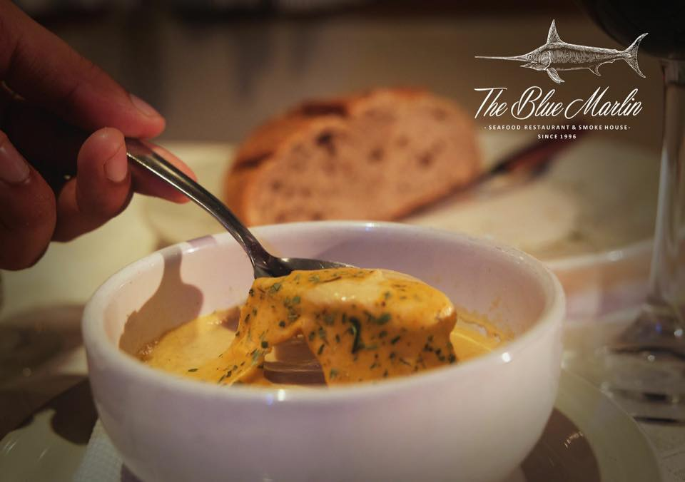
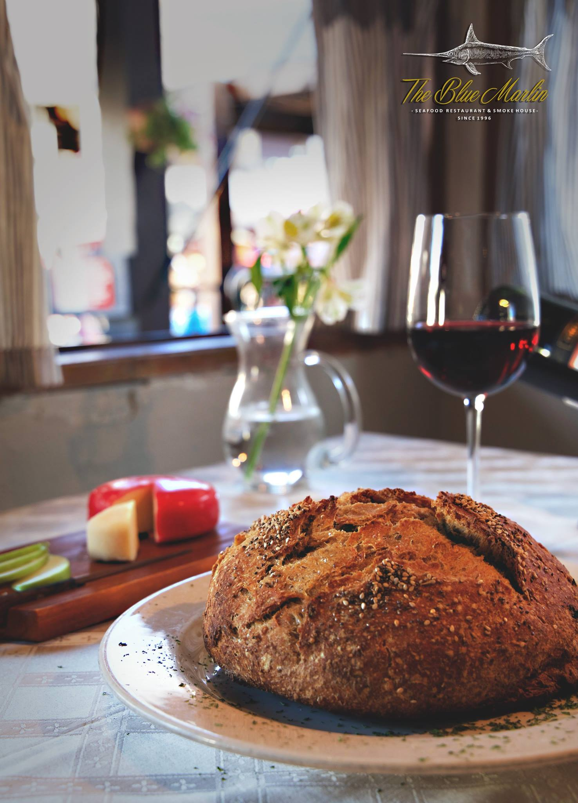
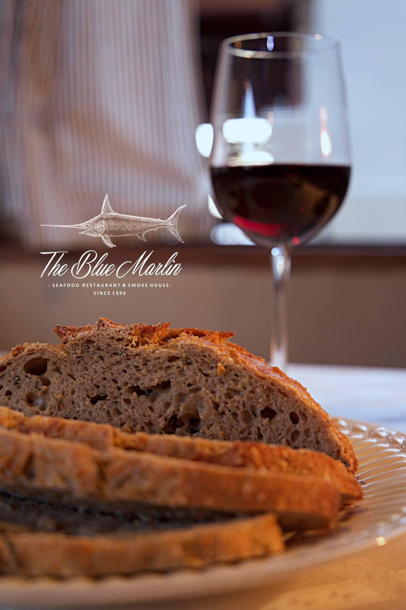
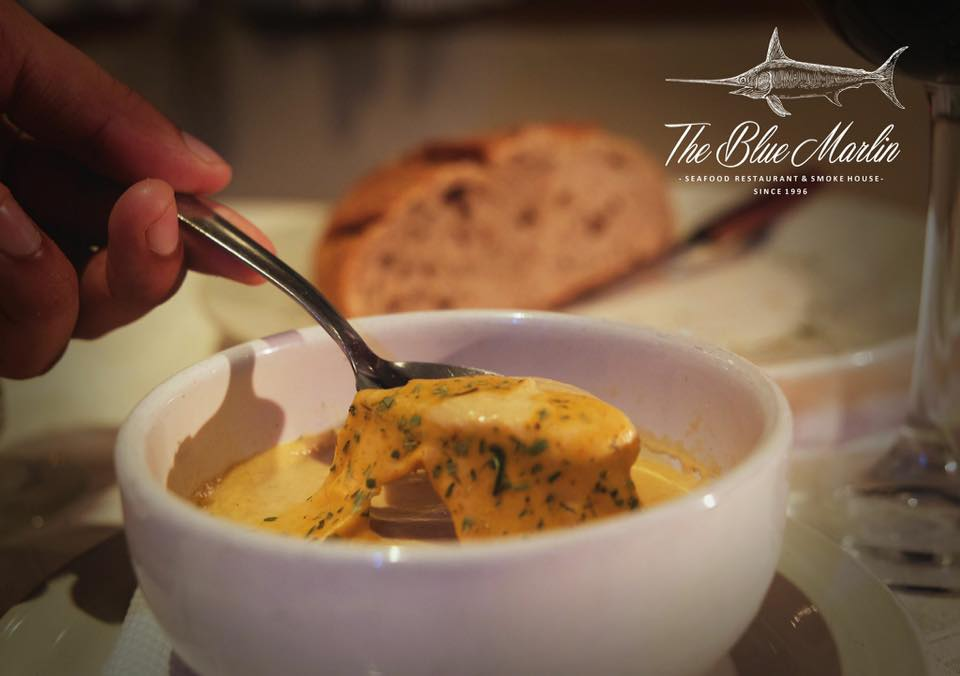
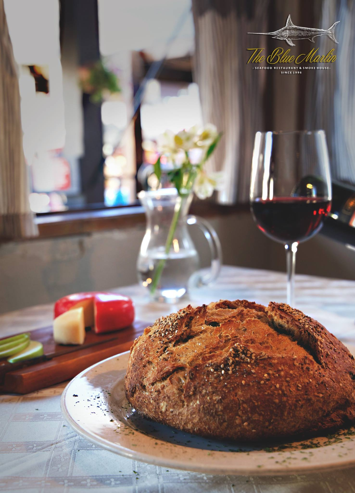
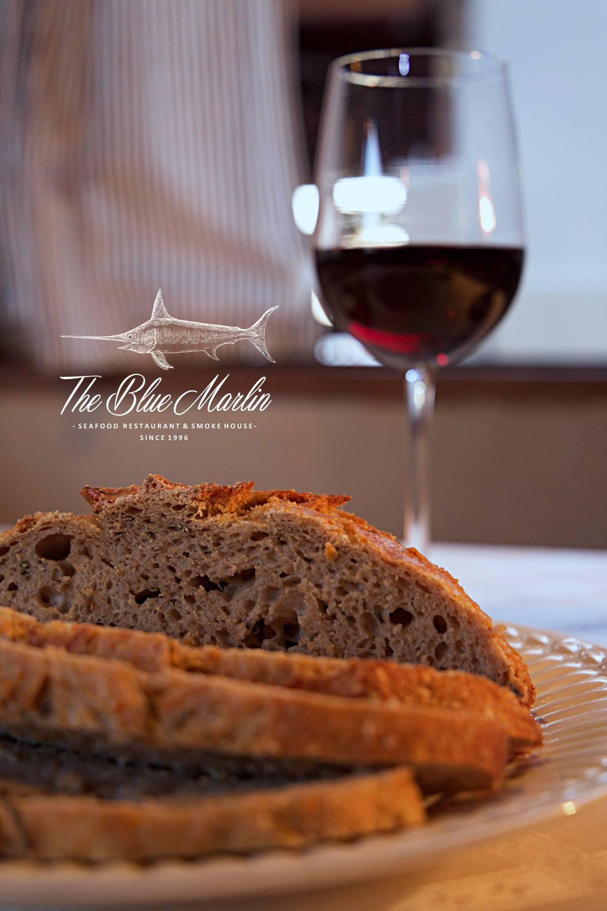

.png) =======
=======
"Del Mar a tu Paladar: The Blue Marlin, donde cada bocado es una experiencia gourmet."
En The Blue Marlin nos comprometemos a ofrecer a nuestros comensales la
más exquisita experiencia
gastronómica de mariscos gourmet. Buscamos superar expectativas a través
de la frescura de nuestros
productos, la excelencia en el servicio y un ambiente acogedor,
convirtiendo cada visita en un festín para los
sentidos.
 





Ser reconocidos como el referente indiscutible de la alta cocina de mariscos, destacando por nuestra calidad, innovación y compromiso con la satisfacción de nuestros clientes. Aspiramos a expandir nuestra presencia, llevando el sabor único de The Blue Marlin a nuevos horizontes.
En The Blue Marlin, nuestro servicio se caracteriza por la atención personalizada, la rapidez y la cortesía. Nuestro equipo altamente capacitado está dedicado a proporcionar una experiencia gastronómica única, garantizando la plena satisfacción de nuestros clientes.